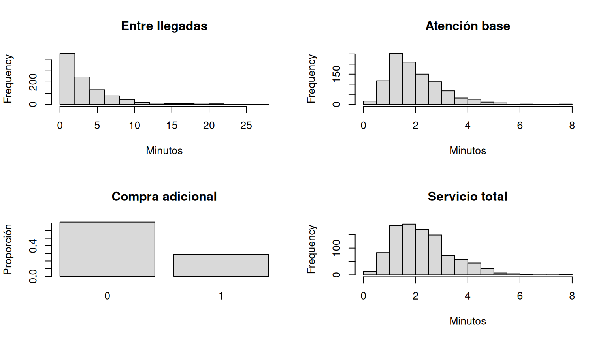

Organización: dos sesiones de 90 minutos. Equipos de máximo tres estudiantes. Ejemplo conductor: cafetería universitaria con una fila y un servidor. Los valores numéricos son supuestos didácticos, no mediciones del campus.
Al finalizar la semana, el equipo podrá (1) delimitar un sistema universitario, (2) definir al menos cuatro variables aleatorias, (3) justificar distribuciones y parámetros y (4) diseñar un algoritmo de simulación.
| Tiempo | Actividad | Evidencia |
|---|---|---|
| 0–15 min | Presentación del reto y delimitación del sistema | Objetivo en una frase |
| 15–40 min | Dibujar entradas, recursos, procesos y salidas | Diagrama de flujo |
| 40–75 min | Identificar variables, unidades, naturaleza y relaciones | Tabla de cuatro variables |
| 75–90 min | Socialización y ajustes | Comentarios de pares |
Pregunta: ¿cómo cambia la espera de los estudiantes cuando varía la tasa de llegadas? Se observa una sola caja. Los clientes llegan, esperan en una fila, reciben servicio y salen. No se modelan múltiples cajas, prioridades ni abandono.
Durante las tres semanas se utilizará un mismo modelo para que los archivos sean independientes y los estudiantes puedan adaptar el código a parqueaderos, salas de estudio, cajas u otros sistemas.
| Variable | Significado | Distribución supuesta | Parámetros |
|---|---|---|---|
| \(T\) | Tiempo entre llegadas (min) | Exponencial | tasa \(\lambda=0.3\) por minuto |
| \(S\) | Atención base (min) | Gamma | forma 4, escala 0.5 |
| \(B\) | ¿Compra adicional? (0/1) | Bernoulli | \(p=0.3\) |
| \(A\) | Tiempo adicional si compra (min) | Uniforme | mínimo 0.5, máximo 1.5 |
El tiempo total de servicio es \(D=S+BA\). El número de llegadas en una ventana de duración \(H\) se deriva de los tiempos entre llegadas; no se genera por separado para la misma trayectoria. Se supone independencia entre las variables primitivas, como simplificación que deberá revisarse con datos reales.
La intensidad de llegadas es \(0.3\times60=18\) clientes por hora. La atención media es \(E(D)=4(0.5)+0.3(1)=2.3\) minutos. La utilización teórica aproximada de un servidor es \(0.3(2.3)=0.69\).
set.seed(1301)
n <- 1000
T <- rexp(n, rate=0.3)
S <- rgamma(n, shape=4, scale=0.5)
B <- rbinom(n, size=1, prob=0.3)
A <- runif(n, min=0.5, max=1.5)
D <- S + B*A
resumen <- data.frame(variable=c('T','S','B','A','D'),
media_simulada=c(mean(T),mean(S),mean(B),mean(A),mean(D)),
media_teorica=c(1/0.3,4*0.5,0.3,1,2.3))
knitr::kable(resumen, digits=3)| variable | media_simulada | media_teorica |
|---|---|---|
| T | 3.354 | 3.333 |
| S | 1.963 | 2.000 |
| B | 0.288 | 0.300 |
| A | 1.004 | 1.000 |
| D | 2.252 | 2.300 |
Explicación: rexp, rgamma,
rbinom y runif generan observaciones según
distribuciones diferentes. set.seed permite reproducir la
misma muestra. Las medias simuladas no coinciden exactamente con las
teóricas porque se trata de muestras aleatorias. La variable derivada
D suma tiempo adicional solamente cuando
B=1.
par(mfrow=c(2,2))
hist(T, main='Entre llegadas', xlab='Minutos', col='gray85')
hist(S, main='Atención base', xlab='Minutos', col='gray85')
barplot(table(factor(B,levels=0:1))/length(B),
main='Compra adicional', ylab='Proporción', col='gray85')
hist(D, main='Servicio total', xlab='Minutos', col='gray85')
par(mfrow=c(1,1))Discusión: las cuatro variables no necesitan tener la misma naturaleza. La Bernoulli es discreta, mientras que las duraciones son continuas. Las distribuciones se seleccionan por el mecanismo del fenómeno, no por conveniencia gráfica.
| Tiempo | Actividad | Evidencia |
|---|---|---|
| 0–20 min | Comparar distribuciones candidatas | Justificación técnica |
| 20–45 min | Definir o estimar parámetros | Tabla de supuestos y fuentes |
| 45–75 min | Traducir el proceso a pseudocódigo | Algoritmo FIFO |
| 75–90 min | Revisar coherencia y viabilidad | Borrador del Informe 2 |
set.seed(1302)
entre_llegadas_obs <- rexp(40, rate=0.3)
atencion_obs <- rgamma(40, shape=4, scale=0.5)
compras_obs <- rbinom(40, size=1, prob=0.3)
lambda_estimado <- 1/mean(entre_llegadas_obs)
p_estimado <- mean(compras_obs)
media_servicio_base <- mean(atencion_obs)
data.frame(lambda_por_min=lambda_estimado,
compras_prob=p_estimado,
atencion_base_media=media_servicio_base)| lambda_por_min | compras_prob | atencion_base_media |
|---|---|---|
| 0.3351 | 0.225 | 1.822 |
Explicación: la tasa exponencial se estima mediante el inverso de la media de los intervalos observados. La probabilidad Bernoulli se estima como proporción de compras. Para una Gamma, conocer solo la media no basta para identificar forma y escala; pueden estimarse por momentos usando media y varianza, si los datos lo permiten.
m <- mean(atencion_obs)
v <- var(atencion_obs)
forma_est <- m^2/v
escala_est <- v/m
c(forma=forma_est, escala=escala_est)## forma escala
## 3.607 0.505Advertencia: estas observaciones se simularon para el ejemplo; no son datos de la Universidad. En un proyecto real, indicar la procedencia de cada parámetro (medición, fuente externa o supuesto).
Elegir un sistema del campus y producir una tabla con mínimo cuatro variables aleatorias, sus unidades, distribuciones, parámetros, origen de los parámetros y justificación. Escribir una pregunta cuantificable (por ejemplo, probabilidad de esperar más de cinco minutos). Dibujar un flujo que distinga entradas aleatorias, reglas del sistema y salidas calculadas.
Entrega semanal: Informe 2 (descripción, modelo probabilístico y algoritmo), según la guía oficial. Verificar: pertinencia del sistema, cuatro variables relevantes, coherencia de unidades, parámetros documentados y algoritmo implementable. La fecha de referencia del Informe 2 es el 21 de octubre; confirmar su articulación con el horario real de clases.